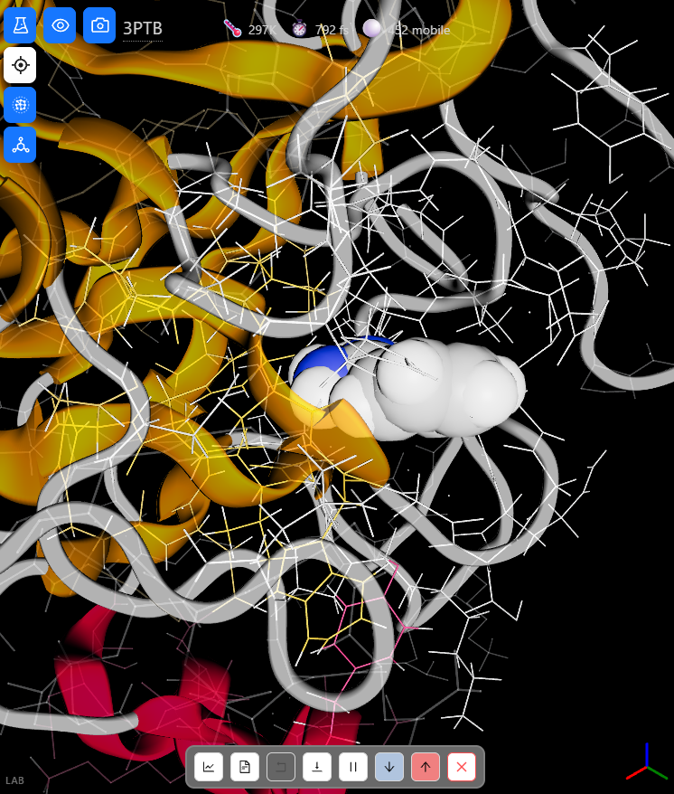
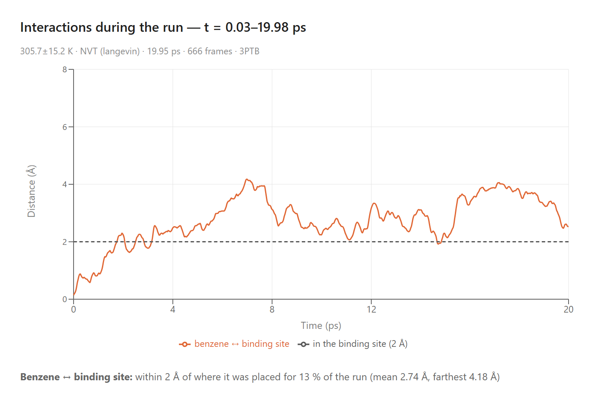
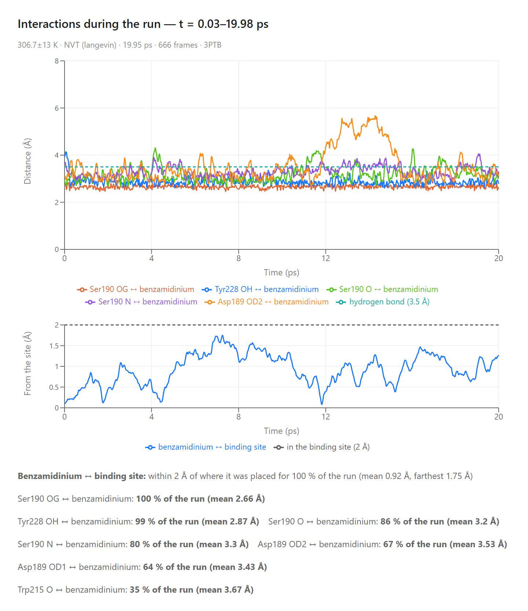

Molecular Recognition: Testing Docked Molecules with Localized Molecular Dynamics
Three small molecules are docked into the pocket of trypsin, and a simulation of the pocket shows which of them stay.
A cell holds thousands of kinds of molecules, and each protein in it works with only a few of them. An enzyme acts on its own substrate, an antibody binds its own target, and a receptor answers its own hormone. The way a protein tells one molecule from another is called molecular recognition. Emil Fischer described it in 1894 with the picture of a lock and a key: an enzyme acts on a molecule whose shape fits the enzyme. Koshland added in 1958 that the protein changes its shape as the molecule binds. Shape is one part of the fit. The charges on the molecule have to meet opposite charges on the protein, and the groups that can form hydrogen bonds have to find partners. A drug is a molecule designed to be recognized by one protein.
A docking program predicts how a small molecule, called the ligand, fits into a pocket of a protein. The program tries many positions and orientations of the ligand against a fixed structure of the protein, scores each one, and keeps the best. Kuntz and coworkers described one of the first docking programs in 1982. Docking gives every ligand a position and a score. A real protein at body temperature moves all the time, and a ligand stays in a pocket only if its contacts with the pocket are strong enough to hold it against that motion. Localized molecular dynamics tests this: it simulates the motion of the ligand and of the part of the protein around it, with the rest of the protein fixed, and shows whether the ligand stays where docking put it. This article follows one example in the Protein Lab of AIMS. It takes an inhibitor of the enzyme trypsin apart into two pieces, docks the pieces and the whole inhibitor into the pocket of trypsin, and simulates the pocket with each of them.
Bovine trypsin (PDB 3PTB) with benzamidinium docked in its S1 pocket. Press Simulate the binding site on the last Ligand binding card in the chat to run the localized simulation described below.
Trypsin and Its Pocket
Try It
Go to AIMS and open the list of examples, with the lightbulb button on the toolbar or the Examples item in the main menu (☰). Open Molecular Recognition in Trypsin and open the chat. The chat already holds the answers to the prompts below, which the sections of this article describe.
- The inhibitor — “Load trypsin with its inhibitor benzamidine bound (PDB 3PTB). How does trypsin recognize the inhibitor?”
- The ring — “Replace the bound benzamidine with benzene, the bare ring without the charged group. Dock it, then simulate the binding site at body temperature. Does the docked position hold?”
- The charged group — “Now try methylguanidinium: the positively charged end of an arginine side chain, with no ring. Dock it and simulate the binding site. Does it hold?”
- The whole inhibitor — “Now dock benzamidinium, benzamidine with the positive charge it carries in water, and simulate the binding site. Does the docked position hold, and how do the three molecules compare?”
Runs differ. Each run starts with different random velocities, so the percentages in your own run will differ from the ones in this article.
Trypsin is a digestive enzyme that cuts the chains of proteins. It cuts a chain only after two of the twenty amino acids, arginine and lysine. The side chains of these two amino acids are long and end in a group that carries a positive charge. Next to the residues of trypsin that cut the chain (His57, Asp102, and Ser195) is a deep, narrow pocket, called the S1 pocket. The side chain of the amino acid before the cut goes into this pocket. At the bottom of the pocket is Asp189, whose side chain carries a negative charge. A positively charged side chain that reaches the bottom of the pocket pairs with Asp189. A pair of opposite charges like this is called a salt bridge. Hedstrom reviews how this pocket sets the specificity of trypsin and of the enzymes related to it.
The example uses the structure of bovine trypsin with the inhibitor benzamidine in the S1 pocket, determined at a resolution of 1.7 Å by Marquart, Walter, Deisenhofer, Bode, and Huber (PDB 3PTB). Benzamidine is a ring of six carbon atoms with an amidine group, a carbon atom bonded to two nitrogen atoms, attached to it. In water the amidine group carries a positive charge, and the charged form is called benzamidinium. In the crystal, benzamidine fills the pocket with its amidine group at the bottom. The first prompt measures its contacts in the structure file: a nitrogen atom of the amidine group is 2.9 Å from an oxygen atom of Asp189, and the nitrogen atoms are also within hydrogen-bonding distance of Gly219 (2.8 Å) and Ser190 (3.0 Å). The inhibitor matches the pocket in three ways: the ring fits between the walls of the pocket, the positive charge meets the negative charge of Asp189, and the N–H groups have partners for hydrogen bonds. Benzamidine blocks the enzyme because it occupies the place of an arginine side chain.
Taking the Inhibitor Apart
The inhibitor and its two pieces. Benzene is the ring alone. Methylguanidinium is a positively charged group without a ring, the end of an arginine side chain. Benzamidinium has the ring and a positively charged group.
The example asks which of these three features the pocket recognizes: the ring, the charge, or both. It tests three molecules. Benzene is the ring of benzamidine alone, with no charge. Methylguanidinium is a positively charged group with no ring; it is the end of an arginine side chain. Benzamidinium is the whole inhibitor, with the ring and the positive charge. The agent fetches each molecule by name from the PubChem database. The names of the charged forms matter: “benzamidinium” and “methylguanidinium” give molecules with a charge of +1, and “benzamidine” and “methylguanidine” give neutral molecules.
For each molecule, the agent removes the benzamidine of the crystal, puts the new molecule in its place, and docks it. Docking starts the molecule in 109 orientations, moves it from each one to a nearby position with a lower score, and keeps the best of the 109 results. The score adds the attraction and repulsion between the atoms of the molecule and the atoms of the protein, the attraction between their charges, and a term for each hydrogen bond. A lower score is better. Docking finds a position without clashes for all three molecules. Benzene has a score of −0.83 and no hydrogen bonds. Methylguanidinium has a score of −3.06 and six hydrogen bonds, and benzamidinium has a score of −3.49 and five; both form hydrogen bonds with Asp189, Ser190, and Trp215. The docked position of benzamidinium is 1.2 Å from the position of benzamidine in the crystal, measured over its nine carbon and nitrogen atoms.
Does the Docked Position Hold?
After each docking, the agent simulates the binding site for 20 ps at 310 K, body temperature. The ligand and every residue within 6 Å of it move freely, a layer 3 Å wide around them is held by springs, and the rest of the protein is fixed. The article on localized molecular dynamics describes the method. Water is represented by the Generalized Born model of Still and coworkers. In this model water weakens the attraction between two charges on the surface of the protein about 78 times, as bulk water does, and it weakens the attraction between two charges buried in a pocket much less. The salt bridge at the bottom of the S1 pocket is a pair of buried charges, so the simulation needs this model to hold it.

The binding site at the start of a run: benzamidinium, drawn as space-filling spheres, in the S1 pocket, with the residues of the pocket drawn as a wireframe.
The simulation measures whether a docked position holds by the distance of the ligand from its binding site, which is the distance between the center of the ligand and its position after docking. The ligand counts as in its binding site while this distance is below 2 Å. The Interactions card of each run plots this distance against time, with the distances of the hydrogen bonds between the ligand and the pocket.
Benzene left its docked position. Its distance from the binding site passed 2 Å after about 2 ps and reached 4.2 Å. Benzene was in its binding site for 13 % of the run, and its average distance was 2.7 Å. It formed no hydrogen bond with the pocket, because it has no group that can form one.

The Interactions card of the benzene run: the distance of benzene from its docked position. Below the dashed line (2 Å), benzene counts as in its binding site.
Methylguanidinium stayed. It was in its binding site for the whole run, at an average distance of 0.8 Å and never farther than 1.5 Å. It held hydrogen bonds with the hydroxyl groups of Ser190 and Tyr228 for the whole run and with an oxygen atom of Asp189 for 89 % of it.
Benzamidinium stayed too. It was in its binding site for the whole run, at an average distance of 0.9 Å and never farther than 1.8 Å. It held hydrogen bonds with the hydroxyl group of Ser190 for the whole run, with Tyr228 for 99 % of it, and with an oxygen atom of Asp189 for 67 % of it. Between 12 and 15 ps the amidine group moved up to 5.6 Å from that oxygen atom of Asp189 and then returned, while the hydrogen bonds with Ser190 and Tyr228 stayed in place.

The Interactions card of the benzamidinium run. The upper chart shows the hydrogen bonds between benzamidinium and the pocket; a hydrogen bond is counted below the dashed line (3.5 Å). The lower chart shows the distance of benzamidinium from its docked position.
| Molecule | Charge | Docking score | In its binding site | Farthest distance | Hydrogen bond with Asp189 |
|---|---|---|---|---|---|
| Benzene | 0 | −0.83 | 13 % of the run | 4.2 Å | none |
| Methylguanidinium | +1 | −3.06 | 100 % of the run | 1.5 Å | 89 % of the run |
| Benzamidinium | +1 | −3.49 | 100 % of the run | 1.8 Å | 67 % of the run |
What the Pocket Recognizes
The two molecules with a positive charge stayed in the pocket, with and without the ring. The ring alone left. In these runs the S1 pocket of trypsin recognizes the positively charged group more than the shape of the ring. This agrees with what trypsin does: it cuts protein chains after arginine, whose side chain ends in the group that methylguanidinium is made of. The hydrogen bonds matter as well. Both charged molecules held hydrogen bonds with Ser190 and Tyr228 for nearly the whole run, and benzamidinium stayed in its binding site during the three picoseconds when one of its contacts with Asp189 was broken.
The docking score ranks the three molecules in the same order: benzene has the worst score, and benzamidinium the best. The score is a number for one fixed position of the ligand in a fixed protein. The simulation tests that position against the thermal motion of the ligand and the pocket, and it shows the result as a distance and as the fraction of the run that each contact lasts.
The Reach of the Method
Each result is one run of 20 ps. A run this long shows whether a docked position holds against thermal motion for tens of picoseconds. Binding and release of a ligand take far longer, and a ligand that stays for 20 ps can leave later. The energies of the simulation are illustrative, so the runs compare how well docked positions hold, and they do not give binding affinities. The article on localized molecular dynamics explains the difference. The docking keeps the ligand rigid, which suits small molecules like these three, and the frozen part of the protein keeps the pocket close to its shape in the crystal.
The model has limits that a student can find with the same steps. Trypsin also cuts protein chains after lysine. In a test run, butylammonium, the end of a lysine side chain, drifted from its docked position, so the model does not reproduce the recognition of lysine. The prompts “replace the ligand with butylammonium” and “replace the ligand with benzoate” (the ring with a negatively charged group) set up runs to compare with the three in this article. The Report button on the control bar posts the Interactions card for each run.
Conclusion
What the Simulations Produced
The simulations were given the crystal structure of trypsin and three molecules docked into its S1 pocket. The results below came out of the runs:
- Benzene — the ring alone left its docked position after about 2 ps and was in its binding site for 13 % of a 20 ps run.
- Methylguanidinium — the charged group alone stayed within 1.5 Å of its docked position and held a hydrogen bond with Asp189 for 89 % of the run.
- Benzamidinium — the whole inhibitor docked 1.2 Å from its position in the crystal and stayed within 1.8 Å of its docked position.
- Recognition — the pocket held the positively charged group with and without the ring.
This article uses the pocket of trypsin to illustrate a new way to learn science: students converse with an AI agent that turns a plain-language question into a molecular dynamics experiment and hands back measured data. Molecular recognition, which textbooks describe with the picture of a lock and a key, becomes something students test for themselves: they take an inhibitor apart, dock each piece, and measure which pieces stay in the pocket.
Setting up this experiment by hand takes skills that few students have. Someone has to prepare the protein and three ligands with their charges, dock each ligand, choose the residues to move and the residues to hold, run each simulation with a thermostat, and write the code that measures the distance of the ligand from its binding site and the lifetime of each hydrogen bond. In AIMS a student types four questions in plain language, and the agent docks each molecule, runs the simulation, measures it, and posts the charts in the conversation, where the student can check the results, repeat a run, and try another molecule. By pairing a physically grounded simulation with an AI that can set it up and run it, AIMS turns a student’s curiosity into a genuine scientific investigation of how a protein recognizes the molecule it binds.
← Back to AIMS